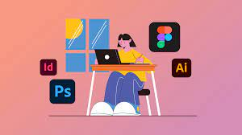

Hey there! I'm Sivakumar
A dedicated 3rd-year CSE student at JNTUACEK. Passionate about technology, I aspire to become a proficient full-stack web developer, continuously exploring new horizons in the tech realm.
My love for coding began when I discovered the magic of HTML, CSS, and JavaScript. Since then, I've been immersed in the world of web development, constantly learning and crafting user-centric interfaces.
My journey as a tech enthusiast has been thrilling, and I'm excited to embark on new challenges, learn from experiences, and contribute meaningfully to the ever-evolving tech landscape.
Skills
 Programming Languages
Programming Languages
HTML, CSS, JavaScript, PHP, Python
 Frameworks & Tools
Frameworks & Tools Bootstrap, MySQL
- Creative Tools
Adobe Premiere Pro, Photoshop, Canva
- Operating System
Proficient in Linux, adept at Linux commands
Projects
- Resume Generator
Automated tool for crafting professional resumes with customizable templates.
- College Academic Management
Efficient platform for managing student records and academic details.
- Netflix Frontpage Clone
Replica of Netflix's homepage, showcasing design and functionality skills.
Certifications & Achievements
- IBM Skill Build
Successfully completed an intensive HTML/CSS certification program during the TCS Internship, mastering essential web development languages for crafting engaging and responsive web interfaces.

-
Obtained fundamental certificates in HTML, CSS, and Database Management Systems (DBMS) through a comprehensive bootcamp hosted by Prompt Engineering. Acquired foundational knowledge in front-end development and database fundamentals.
Bootcamp - GitHub Student Developer Pack
Utilizing the GitHub Student Developer Pack, acquired a GitHub Pro account and gained access to a suite of powerful tools and resources for collaborative coding, version control, and project management.
-
Passionate and well-versed in various computer technologies, eagerly keeping up with the latest advancements in electronic gadgets and emerging technologies, fostering a continual quest for knowledge and innovation.
Tech Enthusiast
Passion & Interests
I'm deeply passionate about web development and constantly enhancing my skills to build user-friendly, robust web applications. Beyond coding, I delve into video editing using Adobe Premiere Pro and love playing around with images on Photoshop and Canva.
My pursuit in web development aligns with my goal of contributing innovative solutions. I'm eager to delve deeper into advanced technologies, collaborate on open-source projects, and continue my journey as a tech enthusiast.